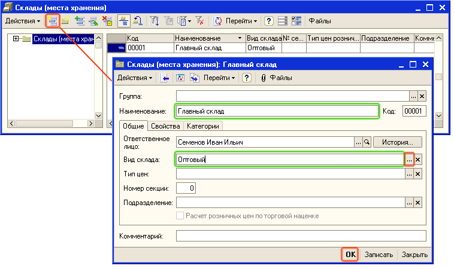

| ПРИМЕЧАНИЕ Склады — это места хранения товаров на торговом предприятии. Склады являются общими для всех организаций, входящих в состав торгового предприятия. Количество складов, на которых хранятся товары торгового предприятия, не ограничено. Склады можно объединять в группы и подгруппы. |
Новые группы и новые элементы в справочнике Склады(места хранения) создаются так же, как в справочнике Контрагенты (см. раздел «Заполнение сведений о деловых партнерах »).

| ПРИМЕЧАНИЕ Кроме оптового склада, в программе предусмотрено ведение учета на розничных складах и неавтоматизированных торговых точках (НТТ). Виды складов в программе различаются методами продажи и стоимостной оценки товаров.
|
Следующий раздел: «Заполнение сведений о товарах и услугах торгового предприятия»